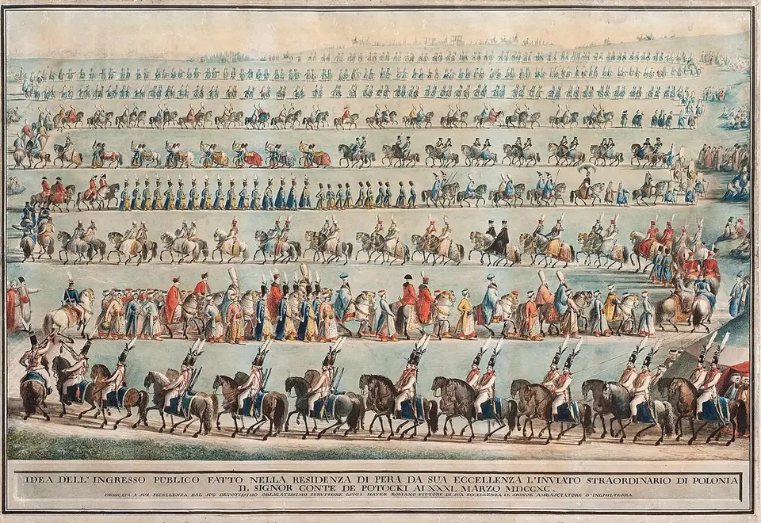

Envoys & Diplomacy
The former Polish Street (Leh Sokağı), today Nur-i Ziya Sokağı
A side street off İstiklal long known as Leh Sokağı, 'Polish Street' – its name kept alive the 19th-century belief that Poland's embassy in Istanbul had never closed.


- Theme
- Envoys & Diplomacy
- District
- Beyoğlu
- Period
- 1788–1793 / 1877–1878
- Visiting
- Open to visitors
The story
This side street off İstiklal was long called Leh Sokağı – Polish Street – and throughout the 19th century the people of Pera believed that a Polish embassy stood on it.
The old Commonwealth never had a permanent embassy in Istanbul; each envoy rented a house for the length of his mission. The last of them, Franciszek Piotr Potocki, was envoy from 1788 to 1793, and his residence – writes the Turkish historian Hacer Topaktaş – most probably stood in Pera, today's Beyoğlu. The ceremonial entry of his embassy into Pera was painted by Luigi Mayer; the picture is now at Wilanów Palace in Warsaw. Two years after Potocki left, Poland vanished from the map.
The street name outlived the partitions. According to Topaktaş it was the name itself that fed the 19th-century belief in a Polish embassy still at work in Pera, although no official Polish mission existed at the time. As the orientalist Jan Reychman noted, the office of Prince Czartoryski's Eastern Agency was also taken for an embassy during the Crimean War. In the Russo-Turkish war of 1877–78 a small office somewhere on Leh Sokağı enrolled Polish volunteers ready to fight on the Ottoman side. An 1898 advertisement kept in the archive of Reşad Ekrem Koçu's Istanbul Encyclopaedia is filed under 'Polonya Sokağı' in Pera – most likely the same street.
Today it is Nur-i Ziya Sokağı and runs beside the grounds of the Palais de France. No plaque recalls the old name, and the envoy's house has never been identified.


How to visit
Nur-i Ziya Sokağı leaves İstiklal Caddesi a few steps from St Anthony's Basilica and drops towards Tomtom; the wall of the Palais de France (the French consulate) runs along one side. Walk down the street and back – it takes a few minutes. The pin marks the street, not a building.
People
- Franciszek Piotr Potocki
- Luigi Mayer
- Jan Reychman
- Adam Jerzy Czartoryski
Location
Beyoğlu, Istanbul · Coordinates: 41.03176, 28.97746